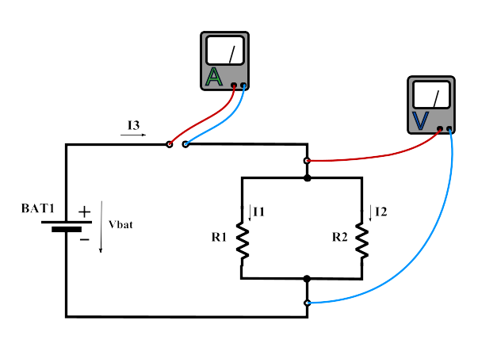
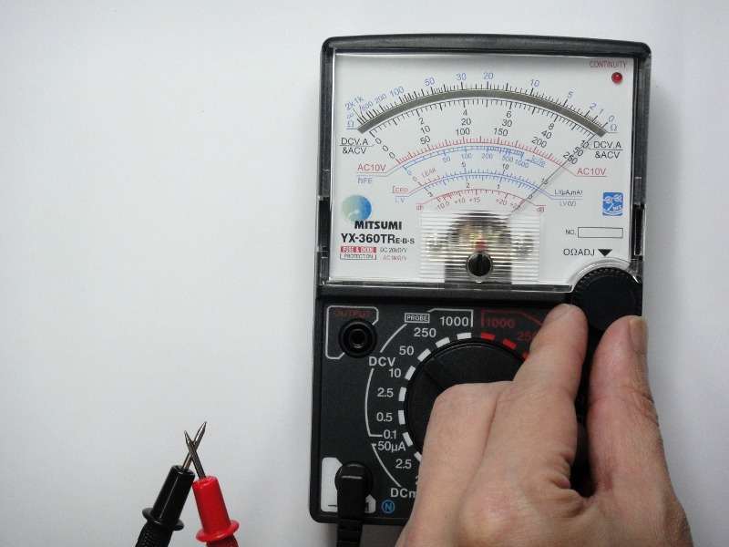
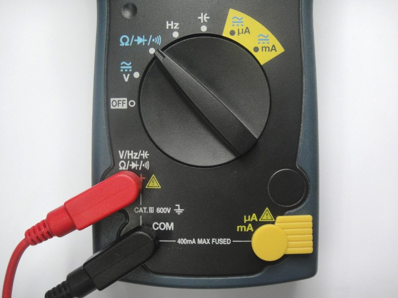

การใช้งานมัลติมิเตอร์สำหรับการวัดปริมาณทางไฟฟ้าในเบื้องต้น#
Keywords: Multimeter, Analog Multimeter, Digital Multimeter, Accuracy
- มัลติมิเตอร์และการวัดปริมาณทางไฟฟ้า
- ความแม่นของเครื่องมือวัด
- ความละเอียดในการวัดค่าด้วยมัลติมิเตอร์ดิจิทัล
- การวัดแรงดันไฟฟ้าและกระแสไฟฟ้าในวงจร
- การใช้งานมัลติมิเตอร์แบบเข็ม
- การวัดค่าความต้านทานด้วยมัลติมิเตอร์แบบเข็ม
- การวัดแรงดันไฟฟ้าด้วยมัลติมิเตอร์แบบเข็ม
- การวัดกระแสไฟฟ้าด้วยมัลติมิเตอร์แบบเข็ม
- การใช้งานมัลติมิเตอร์แบบดิจิทัล
- การวัดค่าความต้านทานด้วยมัลติมิเตอร์ดิจิทัล
- การวัดแรงดันหรือความต่างศักย์ไฟฟ้าด้วยมัลติมิเตอร์ดิจิทัล
- การวัดแรงดันไฟฟ้ากระแสสลับด้วยมัลติมิเตอร์ดิจิทัล
- การวัดกระแสไฟฟ้าด้วยมัลติมิเตอร์ดิจิทัล
▷ มัลติมิเตอร์และการวัดปริมาณทางไฟฟ้า#
ตัวอย่างหน่วยวัดทางไฟฟ้าที่สําคัญ มีดังต่อไปนี้
- กระแสไฟฟ้า (Current) มีหน่วยวัดเป็น "แอมแปร์" (Ampere) ใช้สัญลักษณ์ "A"
- แรงดันไฟฟ้า (Voltage) มีหน่วยวัดเป็น "โวลต์" (Volt) ใช้สัญลักษณ์เป็น "V"
- ความต้านทานไฟฟ้า (Resistance) มีหน่วยวัดเป็น "โอห์ม" (Ohm) และใช้สัญลักษณ์เป็น "Ω"
- กำลังไฟฟ้า (Power) มีหน่วยวัดเป็น "วัตต์" (Watt) ใช้สัญลักษณ์ "W"
- ความจุไฟฟ้า (Capacitance) มีหน่วยวัดเป็น "ฟารัด" (Farad) และใช้สัญลักษณ์ "F"
- ความเหนี่ยวนํา (Inductance) มีหน่วยวัดเป็น "เฮนรี่" (Henry) และใช้สัญลักษณ์ "H"
มัลติมิเตอร์ (Multimeter) หรือ มิเตอร์ไฟฟ้า (Electrical Meter) เป็นเครื่องมือวัดทางไฟฟ้าที่สำคัญและใช้งานบ่อยสำหรับการทดลองทางไฟฟ้าและอิเล็กทรอนิกส์ ใช้ในการวัดปริมาณทางไฟฟ้าได้หลายแบบ และสามารถเลือกช่วงหรือย่านการวัดค่าได้ เช่น
- โอห์มมิเตอร์ (Ohmmeter) สำหรับวัดความต้านทาน
- โวลต์มิเตอร์ (Voltmeter) สำหรับวัดความต่างศักย์ไฟฟ้าหรือแรงดันไฟฟ้า และ
- แอมมิเตอร์ (Ammeter) สำหรับวัดปริมาณกระแสที่ไหลในวงจรไฟฟ้า เป็นต้น
โดยทั่วไป มัลติมิเตอร์ มีลักษณะเป็นอุปกรณ์อิเล็กทรอนิกส์ที่พกพาได้ (Handheld Multimeters) และใช้แบตเตอรี่เป็นแหล่งพลังงาน เช่น แบตเตอรี่ประเภทอัลคาไลน์ มัลติมิเตอร์อาจมีลักษณะเป็นเครื่องมือวัดสำหรับโต๊ะทดลอง (Benchtop Multimeters) ในห้องปฏิบัติการ ซึ่งมักมีขนาดใหญ่ ราคาสูงกว่า และมีความละเอียดในการวัดสูงกว่าแบบพกพา เป็นต้น
มัลติมิเตอร์ แบ่งออกเป็นสองประเภท ได้แก่
- มัลติมิเตอร์แบบเข็มชี้ (Analog Multimeter) ซึ่งใช้เข็มที่หมุนได้บนสเกลเพื่อระบุค่าที่วัดได้ และ
- มัลติมิเตอร์แบบดิจิทัล (Digital Multimeter: DMM) ซึ่งสามารถแสดงค่าเป็นตัวเลขได้ เช่น 4 ตำแหน่ง สามารถปรับย่านการวัดได้โดยอัตโนมัติ และแตกต่างจากการใช้งานมิเตอร์แบบแอนะล็อก ทำให้สะดวกในการใช้งานและอ่านค่า อีกทั้งยังมีฟังก์ชันการใช้งานมากกว่า เช่น การตรวจสอบการทำงานของไดโอด การวัดค่าตัวเก็บประจุไฟฟ้า การวัดความถี่ของสัญญาณที่มีคาบ เป็นต้น
แต่สำหรับงานทางด้านอิเล็กทรอนิกส์พื้นฐานแล้ว มัลติมิเตอร์มักถูกนำมาใช้วัดความต้านทาน การเชื่อมต่อกันทางไฟฟ้าระหว่างสองจุดในวงจร การวัดแรงดันและกระแสสำหรับไฟฟ้ากระแสตรงและแรงดันต่ำ การวัดสัญญาณที่มีการเปลี่ยนแปลงแอมพลิจูดในเชิงเวลา จะใช้เครื่องมือวัดประเภทอื่น เช่น ออสซิลโลสโคป (Oscilloscope) เพื่อดูรูปคลื่นสัญญาณ และหาพารามิเตอร์ต่าง ๆ ของสัญญาณไฟฟ้า เป็นต้น
คำแนะนำ: ควรศึกษาวิธีการใช้งาน รายละเอียดทางเทคนิค ข้อจำกัดและข้อควรระวังในการใช้งานมัลติมิเตอร์ จากคู่มือการใช้งาน ให้เข้าใจก่อนเริ่มต้นใช้งาน
รูป: ตัวอย่างมัลติมิเตอร์แบบเข็มชี้ MITSUMI YX-360TR (E-B-S) Multimeter
รูป: ตัวอย่างมัลติมิเตอร์แบบดิจิทัล SANWA CD770 DMM
รูป: ตัวอย่างมัลติมิเตอร์แบบดิจิทัล FLUKE 115 DMM (Spec Sheets 1 | 2)
{kind=link}
{kind=link}
▷ ความแม่นของเครื่องมือวัด#
ความเชื่อถือได้ของค่าที่วัดได้ ขึ้นอยู่กับความแม่น (Accuracy) ของเครื่องมือวัด ความแม่นของเครื่องมือวัด หมายถึง ผลต่างระหว่างค่าที่อ่านได้และค่าจริง หรือ ค่าความคลาดเคลื่อน ความแม่นของเครื่องมือวัดจะถูกกำหนดไว้โดยผู้ผลิต และจะต้องมีการสอบเทียบเครื่องมือวัด (Calibration)
การระบุความแม่นของเครื่องมือวัด ทำได้หลายวิธี เช่น มัลติมิเตอร์แบบเข็มบอกความแม่นเป็น % of Full Scale (%f.s.) แต่สำหรับมัลติมิเตอร์ดิจิทัลหรือแบบตัวเลข บอกความคลาดเคลื่อนเป็นผลรวม (% of Reading + Number of Digits) เขียนย่อเป็น (%rdg + No. of dgt.) ซึ่งจะมีค่าเปลี่ยนไปสำหรับแต่ละปริมาณที่จะวัด และขึ้นอยู่กับย่านการวัดด้วย
ยกตัวอย่างเช่น มัลติมิเตอร์แบบดิจิทัล มีความแม่นระบุไว้เป็น ±(0.9 %rdg + 2dgt) สำหรับย่านวัด 4.000V (DCV) ดังนั้นถ้าวัดค่าได้ 3.500V ซึ่งเป็นค่าตัวเลขบนจอแสดงผล มีความละเอียด 0.001V และจะได้ค่าความคลาดเคลื่อนดังนี้
หรืออีกตัวอย่างหนึ่ง สำหรับย่านวัด 400mV มัลติมิเตอร์ดิจิทัลอีกรุ่นหนึ่ง มีความแม่น ±(0.5 %rdg + 2dgt) ดังนั้นถ้านำไปวัดแรงดันไฟฟ้า 100mV จะได้ค่าความคลาดเคลื่อนดังนี้
ดังนั้นจะได้ค่าอยู่ในช่วง 99.3mV ถึง 100.7mV
ในขณะที่ความแม่นของมัลติมิเตอร์แอนะล็อก ขึ้นอยู่กับย่านวัดที่เลือกใช้ และระบุเป็นเปอร์เซ็นต์ของย่านวัดนั้นหรือค่าเต็มสเกล (Full-Scale Accuracy) และไม่ขึ้นอยู่กับค่าที่อ่านได้ ค่าเต็มสเกลของแต่ละย่านวัด หมายถึง ผลต่างของค่าสูงสุดกับค่าต่ำสุดในย่านวัดนั้น
สมมุติว่า เลือกย่านวัดโวลต์เป็น มีค่าความแม่น ของ Full Scale หรือคิดเป็น หรือ ดังนั้นถ้าวัดค่าได้ ค่าที่ถูกต้องจะถูกระบุว่า อยู่ในช่วง ถึง
แต่ถ้าเลือกย่านวัดเป็น และถ้าวัดค่าได้ จะได้ความคลาดเคลื่อน คิดเป็น หรือ ค่าที่ถูกต้องจะถูกระบุว่า อยู่ในช่วง ถึง ซึ่งมีความคลาดเคลื่อนมากกว่าการเลือกใช้ย่านวัด ดังนั้นการเลือกย่านวัดสำหรับมัลติมิเตอร์แบบเข็มให้เหมาะสมจึงเป็นสิ่งสำคัญในการใช้งาน
▷ ความละเอียดในการวัดค่าด้วยมัลติมิเตอร์ดิจิทัล#
มัลติมิเตอร์แบบดิจิทัล แสดงค่าที่วัดได้สำหรับปริมาณไฟฟ้าอยู่ในรูปของตัวเลข หรือ Display Digits ยิ่งมีจำนวนตัวเลขหลายหลัก ก็หมายถึง ความละเอียดในการวัดที่มีมากขึ้น (Measurement Resolution)
การจำแนกประเภทของตัวเลขในการแสดงค่า (Display Digits) มีดังนี้
- Whole Digits (หลักเต็ม) หมายถึง ตัวเลขใด ๆ ก็ได้ 0–9
- Half Digit (หลักครึ่ง) หมายถึง ตัวเลขที่อยู่หน้าสุดทางซ้ายมือ และสำคัญที่สุด (Most-Significant Digit) และตัวเลขที่เป็นไปได้คือ 0 หรือ 1 เท่านั้น
- Fractional Digit (หลักเศษส่วน) หมายถึง ตัวเลขที่อยู่หน้าสุดทางซ้ายมือ และสำคัญที่สุด แต่เป็นตัวเลขอื่นได้นอกเหนือจาก 0 และ 1
ตัวอย่างความละเอียดของการแสดงค่าตัวเลข
- มัลติมิเตอร์ 3 ½ digits จะแสดงค่าตัวเลขในช่วง +/- 0 .. 1999 (นับค่าไม่เกิน 2,000 Counts)
- มัลติมิเตอร์ 4 ½ digits จะแสดงค่าตัวเลขในช่วง +/- 0 .. 19999 (นับค่าไม่เกิน 20,000 Counts)
- มัลติมิเตอร์ 3 3/4 digits จะแสดงค่าตัวเลขในช่วง +/- 0 .. 3999 (นับค่าไม่เกิน 4,000 Counts)
- มัลติมิเตอร์ 3 5/6 digits จะแสดงค่าตัวเลขในช่วง +/- 0 .. 5999 (นับค่าไม่เกิน 6,000 Counts)
ข้อสังเกต: มัลติมิเตอร์ดิจิทัล จะมีการปรับย่านวัด (หรือตัวคูณ) โดยอัตโนมัติ ในขณะที่มัลติมิเตอร์แบบเข็ม ผู้ใช้จะต้องปรับเลือกเองให้เหมาะสมตามการใช้งาน
▷ การวัดแรงดันไฟฟ้าและกระแสไฟฟ้าในวงจร#
การวัดแรงดันตกคร่อมระหว่างจุดสองจุดในวงจร เช่น ที่ขาทั้งสองตัวต้านทาน หรือจุดใดจุดหนึ่งเทียบกับกราวด์ของวงจร จะต้องเลือกโหมดการวัดเป็นโวลต์มิเตอร์ และนำขั้วสายวัดของมิเตอร์วัดที่จุดทั้งสอง ถ้าความต่างศักย์ไฟฟ้าที่สายวัดขั้วบวกสูงกว่าขั้วลบ จะได้ค่าตัวเลขสำหรับแรงดันไฟฟ้าเป็นบวก
การวัดปริมาณกระแสในวงจร เช่น กระแสที่ไหลผ่านตัวต้านทาน จะต้องเลือกโหมดการวัดเป็นแอมมิเตอร์ และนำขั้วสายวัดของมิเตอร์ไปต่อเข้ากับวงจรแบบอนุกรม เพื่อให้มีกระแสไหลผ่านตัวมิเตอร์ ถ้ากระแสไหลในทิศทางเข้าที่สายขั้วบวกผ่านวงจรภายในมิเตอร์และออกที่ขั้วลบ จะได้ปริมาณกระแสไฟฟ้ามีค่าตัวเลขเป็นบวก แต่ถ้าค่าเป็นลบ แสดงว่า กระแสไหลในทิศทางตรงกันข้าม
ความต้านทานภายใน (Internal Resistance) ของมัลติมิเตอร์ในโหมดที่แตกต่างกัน
- มัลติมิเตอร์ในโหมดการวัดโวลต์ มีความต้านทานภายในสูง และจะถือมีกระแสไฟฟ้าไหลเข้าไปตัวมิเตอร์น้อยมาก เมื่อนำไปต่อและวัดแรงดันไฟฟ้าในวงจร ถ้าเป็นมัลติมิเตอร์แบบดิจิทัล จะมีความต้านทานภายในอย่างน้อย 10MΩ แต่ถ้าเป็นมัลติมิเตอร์แบบเข็ม จะมีความต้านทานภายในต่ำกว่าและขึ้นอยู่กับย่านการวัด เช่น ระบุเป็น 20kΩ/V ดังนั้นถ้าเลือกย่านวัด 10V (DCV) จะมีความต้านทานภายใน 200kΩ
- มัลติมิเตอร์ในโหมดการวัดกระแส มีความต้านทานภายในต่ำมาก และถือว่านำไฟฟ้าได้ดี
ข้อควรระวัง: มัลติมิเตอร์ มีการใส่ฟิวส์ป้องกันกระแสเกิน เช่น 500mA ดังนั้นต้องระวังมิให้มีกระแสไฟฟ้าไหลผ่านมิเตอร์สูงกว่าระดับดังกล่าว เพราะจะทำให้ฟิวส์ขาด
รูป: ตัวอย่างวงจรไฟฟ้าและการวัดแรงดันตกคร่อมที่ตัวต้านทานแต่ละตัว

รูป: ตัวอย่างการวัดกระแสในวงจร และแรงดันตกคร่อมที่ตัวต้านทานสองตัวที่ต่อขนานกัน
▷ การใช้งานมัลติมิเตอร์แบบเข็ม#
โดยทั่วไปแล้ว มัลติมิเตอร์แบบเข็ม มีสวิตช์แบบหมุนเพื่อเลือกว่า จะใช้เครื่องวัดปริมาณทางไฟฟ้าชนิดใด และมีส่วนแสดงผลที่เป็นหน้าปัดพร้อมสเกล และเข็มชี้สำหรับการวัดปริมาณไฟฟ้าแบบต่าง ๆ เช่น
- ความต้านทาน (Ω)
- ความต่างศักย์ไฟฟ้าสำหรับไฟฟ้ากระแสตรง (DC Voltage)
- ความต่างศักย์สำหรับไฟฟ้ากระแสสลับ (AC Voltage)
- ปริมาณกระแสสำหรับไฟฟ้ากระแสตรง (DC Current) เป็นต้น
รูป: ตัวอย่างมัลติมิเตอร์แบบเข็ม Mitsumi YX-360TR พร้อมสายวัดขั้วบวก (สีแดง) และลบ (สีดำ)
ข้อควรระวัง: อย่านำสายวัดของมัลติมิเตอร์ต่างรุ่นหรือโมเดลมาใช้ปะปนกัน
รูป: ตัวอย่างสวิตช์เลือกรูปแบบและย่านการวัดของมัลติมิเตอร์แบบเข็ม
รูป: ตัวอย่างหน้าปัดแสดงสเกลในการวัดของมัลติมิเตอร์แบบเข็ม
รูป: สเกลและตัวคูณสำหรับย่านการวัด ความแม่นของมัลติมิเตอร์แบบเข็ม SANWA YX-360TRF
▷ การวัดค่าความต้านทานด้วยมัลติมิเตอร์แบบเข็ม#
ในการวัดค่าความต้านทานโดยใช้มัลติมิเตอร์ จะต้องเลือกรูปแบบการวัดเป็น โอห์มมิเตอร์ (Ohmmeter) และมีขั้นตอนในการวัดค่าความต้านทาน โดยใช้มัลติมิเตอร์แบบเข็ม ดังนี้
- เสียบสายวัดขั้วบวก (+) และลบ (-COM หรือ Common) ให้ถูกต้อง (สายสีแดงและสีดำตามลำดับ)
- หมุนสวิตช์เพื่อเลือกย่านการวัดค่าให้เหมาะสม (Resistance Range)
- ใช้ปลายของหัววัด (Probe Tips) ทั้งสองสัมผัสกัน เข็มจะชี้ไปทางขวาของสเกล จะต้องได้ 0 โอห์ม แต่ถ้าไม่ได้ ให้ปรับการชี้ศูนย์ (หมุนปุ่มสีดำที่มีสัญลักษณ์ 0 ΩADJ) จนได้ค่า 0 โอห์ม ขั้นตอนนี้คือ การปรับศูนย์ของมัลติมิเตอร์ (Multimeter Zeroing)
- ใช้ปลายของหัววัดทั้งสอง เพื่อวัดความต้านทานระหว่างจุดสองจุด
- อ่านค่าจากสเกลการวัดตามตำแหน่งที่เข็มชี้
ข้อสังเกต:
- ในการเปลี่ยนย่านวัดของโอห์มทุกย่าน จะต้องทำการปรับการปรับศูนย์ใหม่ทุกครั้ง
- มัลติมิเตอร์แบบเข็มจะต้องรับได้รับการปรับศูนย์ก่อนวัดความต้านทาน (Zero-ohm Adjustment) เนื่องจากแบตเตอรีของมิเตอร์ซึ่งจำเป็นต้องใช้ในการวัดความต้านทาน อาจมีแรงดันไฟฟ้าไม่คงที่เมื่อใช้งานไประยะหนึ่งแล้ว หรือย่านวัดความต้านทานที่แตกต่างกันอาจใช้แรงดันแบตเตอรี่ที่แตกต่างกันสำหรับมัลติมิเตอร์แบบเข็มบางรุ่น
- ค่าความต้านทานจะเพิ่มจาก 0 โอห์ม เริ่มนับจากทางขวาไปทางซ้ายตามสเกลสำหรับการอ่านค่าความต้านทาน แต่ให้สังเกตว่า สเกลไม่เป็นเชิงเส้น และความคาดเคลื่อนของค่าความต้านทานที่อ่านได้จะเพิ่มมากขึ้น ดังนั้นให้เลือกย่านวัดโดยให้เข็มชี้เอียงไปทางขวา ในทิศทางศูนย์โอห์ม
ข้อควรระวัง: ไม่ควรวัดค่าความต้านทานของตัวต้านทานในวงจรไฟฟ้า เพราะอาจจะทำให้วัดค่าความต้านทานได้ไม่ถูกต้อง เพราะตัวต้านทานนั้นอาจจะต่อร่วมอยู่กับอุปกรณ์อื่น ๆ ในวงจร เช่น การต่อแบบขนานกัน และไม่ควรทำการวัดในขณะที่มีแรงดันตกคร่อมที่ตัวต้านทาน เพราะจะทำให้มัลติมิเตอร์เสียหายได้
ในการวัดค่าความต้านทาน จะต้องเลือกย่านการวัดให้เหมาะสม มัลติมิเตอร์แบบเข็มที่นำมาใช้เป็นตัวอย่าง มีย่านการวัด 4 ช่วงการวัด ได้แก่
- x 1 ซึ่งจะอ่านค่าได้ในช่วง 0 - 2kΩ
- x 10 ซึ่งจะอ่านค่าได้ในช่วง 0 - 20kΩ
- x 1k ซึ่งจะอ่านค่าได้ในช่วง 0 - 2MΩ
- x 10k ซึ่งจะอ่านค่าได้ในช่วง 0 - 20MΩ
ตัวอย่างถัดไปเป็นการสาธิตการวัดค่าความต้านทานของตัวต้านทาน 150 โอห์ม โดยเลือกย่านการวัดที่ และเข็มชี้ที่ตัวเลขประมาณ ดังนั้นค่าที่อ่านได้คือ

รูป: ตัวอย่างการสัมผัสปลายหัววัดทั้งสองแล้วปรับชดเชยให้ได้ศูนย์โอห์ม (เลือกย่านวัดที่ x10)

รูป: ตัวอย่างการวัดค่าความต้านทานของตัวต้านทาน 150 โอห์ม (เลือกย่านวัดที่ x10) และอ่านค่าตัวเลขได้เท่ากับ 15
▷ การวัดแรงดันไฟฟ้าด้วยมัลติมิเตอร์แบบเข็ม#
ในการวัดแรงดันตกคร่อม (Voltage Drop) ที่ตัวต้านทาน หรือความต่างศักย์ระหว่างจุดสองจุดใด ๆ ในวงจร โดยใช้มัลติมิเตอร์ จะต้องเลือกรูปแบบการวัดเป็นโวลต์มิเตอร์ และนำขั้วของสายวัดไปต่อแบบขนานในวงจร มัลติมิเตอร์แบบเข็มที่ได้เลือกมาเป็นตัวอย่าง มีย่านการวัดแรงดันในเลือกใช้ (ไฟฟ้ากระแสตรง หรือ DCV) ทั้งหมด 7 ช่วง ดังนี้
- 0 – 0.1 V (อ่านค่าจากสเกล 0–10)
- 0 – 0.5 V (อ่านค่าจากสเกล 0–50)
- 0 – 2.5 V (อ่านค่าจากสเกล 0–250)
- 0 – 10 V (อ่านค่าจากสเกล 0–10)
- 0 – 50 V (อ่านค่าจากสเกล 0–50)
- 0 – 250 V (อ่านค่าจากสเกล 0–250)
- 0 – 1000 V (อ่านค่าจากสเกล 0–10)
การอ่านค่าตัวเลขบนสเกลสำหรับแรงดันไฟฟ้ากระแสตรง จะอ่านจากซ้ายไปขวา
รูป: ตัวอย่างการวัดแรงดันตกคร่อมของตัวต้านทานสองตัว ( 330 และ 220 โอห์ม) ที่ต่ออนุกรมกัน และป้อนไฟเลี้ยงคงที่ +5V โดยเลือกย่านการวัด DC 0–10V และอ่านค่าได้ประมาณ 5V
รูป: ตัวอย่างการวัดแรงดันตกคร่อมเฉพาะที่ตัวต้านทาน 220 โอห์ม โดยเลือกย่านการวัด DC 0–10V เช่นกัน และอ่านค่าได้ประมาณ 2V
มัลติมิเตอร์แบบเข็มตามตัวอย่าง มีความแม่นหรือความถูกต้อง ในการวัดแรงดันไฟฟ้าอยู่ในช่วง ของค่า Full Scale (อ้างอิงตามคู่มือการใช้งานของเครื่องมือวัด) เมื่อเทียบกับค่าสูงสุดของสเกลหรือย่านการวัดและใช้สเกลแบบเชิงเส้น ดังนั้นถ้าเลือกย่านการวัด เช่น DC 0–10V จะมีความแม่นอยู่ในขอบเขต หรือ เป็นต้น
▷ การวัดกระแสไฟฟ้าด้วยมัลติมิเตอร์แบบเข็ม#
ในการวัดปริมาณกระแสที่ไหลในวงจรโดยใช้มัลติมิเตอร์ จะต้องเลือกรูปแบบการวัดเป็นแอมมิเตอร์ และให้ต่อแบบอนุกรมในวงจร เพื่อให้มีกระแสไหลผ่านตัวแอมมิเตอร์ มัลติมิเตอร์แบบเข็มที่ได้เลือกมาเป็นตัวอย่างนี้ มีย่านการวัดปริมาณกระแสตรง หรือ DCA ซึ่งมี 4 ช่วง ให้เลือก ดังนี้
- 0–50 µA (อ่านค่าจากสเกล 0–50)
- 0–2.5 mA (อ่านค่าจากสเกล 0–250)
- 0–25 mA (อ่านค่าจากสเกล 0–250)
- 0–0.25 A (อ่านค่าจากสเกล 0–250)
มัลติมิเตอร์แบบเข็มตามตัวอย่าง มีความแม่นหรือความถูกต้องในการวัดปริมาณกระแสไฟฟ้า อยู่ในช่วง เมื่อเทียบกับค่าสูงสุดของสเกลหรือย่านการวัด เช่น ถ้าเลือกย่านการวัดแบบ DCmA ในช่วง 0–25mA จะมีความแม่นอยู่ในขอบเขต หรือ เป็นต้น
ตัวอย่างการวัดกระแสที่ไหลผ่านตัวต้านทาน 220 โอห์ม อ่านได้ประมาณ 21.5 mA เข็มชี้ที่ตัวเลขประมาณ 215 บนสเกลของ 250 ใช้ย่านการวัด DCmA 0–25 mA
รูป: การวัดกระแสที่ไหลผ่านตัวต้านทานขนาด 220 โอห์ม โดยป้อนไฟเลี้ยงที่จุดเชื่อมต่อในแนวนอน แถบสีแดง (ขั้วบวก) และสีน้ำเงิน (ขั้วลบ) ซึ่งเป็นแรงดันไฟเลี้ยงกระแสตรงที่ +5V
ตัวอย่างการวัดกระแสที่ไหลผ่านตัวต้านทาน 1k โอห์ม อ่านได้ประมาณ 5.5 mA เข็มชี้ที่ตัวเลขประมาณ 55 บนสเกลของ 250 ใช้ย่านการวัด DCmA 0–25 mA
รูป: การวัดกระแสที่ไหลผ่านตัวต้านทานขนาด 1k โอห์ม โดยใช้แรงดันไฟฟ้าที่ +5V เป็นแรงดันไฟเลี้ยง และเลือกย่านการวัดแบบ DCmA ในช่วง 0–25mA
▷ การใช้งานมัลติมิเตอร์แบบดิจิทัล#
มัลติมิเตอร์แบบดิจิทัล มีสวิตช์หมุนเลือกรูปแบบและย่านการวัด มีจอภาพ LCD แสดงผลเป็นตัวเลข เช่น 4 ตำแหน่ง (Digits) มีสายวัดสองเส้นสำหรับขั้วบวก (สีแดง) และขั้วลบ (สีดำ)
มัลติมิเตอร์แบบดิจิทัลที่ได้เลือกมาเป็นตัวอย่าง (SANWA CD770 Manual) มีช่องเสียบสายวัด อยู่ 3 ช่อง ช่องแรกคือ COM สำหรับเสียบสายขั้วลบ ช่องที่สองสำหรับใช้เสียบสายขั้วบวกในกรณีที่วัดปริมาณที่ไม่ใช่กระแสไฟฟ้า เช่น วัดค่าความต้านทาน วัดแรงดันไฟฟ้า (ไฟฟ้ากระแสตรงและกระแสสลับ) ตรวจสอบการเชื่อมต่อถึงกันทางไฟฟ้า (Continuity Test) และตรวจสอบทิศทางของไดโอด (Diode Test) เป็นต้น และช่องที่สามสำหรับเสียบสายขั้วบวกเมื่อต้องการวัดปริมาณกระแสไฟฟ้า
รูป: แสดงองค์ประกอบของมิเตอร์ CD770 DMM ในมุมมองจากด้านหน้า
ข้อดีของการใช้มัลติมิเตอร์แบบดิจิทัลคือ สามารถอ่านค่าได้ง่าย มีความแม่นสูง (โดยทั่วไปแล้ว ไม่เกิน ±1%) และสามารถปรับช่วงการวัดได้โดยอัตโนมัติ (Auto Ranging)
รูป: ข้อมูลเชิงเทคนิคเกี่ยวกับความแม่นของ CD770 DMM

รูป: คำแนะนำในการใช้งาน CD770 DMM
ข้อควรระวัง: การใช้งานมัลติมิเตอร์ที่ต้องมีการเสียบสายวัดขั้วบวก แยกกรณีกันระหว่างการวัดปริมาณกระแส และการวัดปริมาณอื่นที่ไม่ใช่กระแส อาจทำให้เกิดความไม่สะดวกในการใช้งาน เพราะผู้ใช้ต้องเปลี่ยนตำแหน่งการเสียบสายขั้วบวกไปมา ในกรณีที่ต้องมีการวัดแรงดันและกระแสบ่อยครั้ง บางครั้งผู้ใช้ก็อาจจะลืมเปลี่ยนตำแหน่งการเสียบสายขั้วบวกให้ถูกต้องตามชนิดของการวัด

รูป: ตัวอย่างการเสียบสายวัดสำหรับการวัดที่ไม่ใช่กระแสไฟฟ้า (เช่น วัดความต้านทาน)
รูป: ตัวอย่างการเสียบสายวัดสำหรับการวัดกระแสไฟฟ้า (ในระดับ mA หรือ µA)
ข้อสังเกต: มัลติมิเตอร์ดิจิทัลต่างรุ่นกัน อาจมีช่องสำหรับเสียบสายวัดแตกต่างกันในแต่ละย่านวัดได้
▷ การวัดค่าความต้านทานด้วยมัลติมิเตอร์ดิจิทัล#
การวัดค่าความต้านทานของตัวต้านทาน จะต้องไม่วัดในวงจร หรือ ในขณะที่มีกระแสไหลผ่านตัวต้านทาน (หรือมีแรงดันตกคร่อมที่ขาของตัวต้านทาน) ในการวัดค่าความต้านทานโดยใช้มัลติมิเตอร์แบบดิจิทัล ให้หมุนสวิตช์ไปที่ย่านการวัดแบบโอห์มมิเตอร์ (มีสัญลักษณ์ Ω เขียนกำกับอยู่)
รูปต่อไปนี้แสดงตัวอย่างการวัดค่าความต้านทานของตัวต้านทาน 220Ω และ 10kΩ ตามลำดับ
รูป: ตัวอย่างการวัดค่าความต้านทาน 220Ω (±5%) บนแผงต่อวงจรด้วยมัลติมิเตอร์ดิจิทัล
รูป: ตัวอย่างการวัดค่าความต้านทาน 10kΩ (±5%) บนแผงต่อวงจรด้วยมัลติมิเตอร์ดิจิทัล
▷ การวัดแรงดันหรือความต่างศักย์ไฟฟ้าด้วยมัลติมิเตอร์ดิจิทัล#
การวัดแรงดันไฟฟ้าหรือความต่างศักย์ไฟฟ้าระหว่างสองจุดในวงจร จะต้องหมุนสวิตช์เลือกการวัด ให้เป็นแบบโวลต์มิเตอร์ (มีสัญลักษณ์ V เขียนกำกับไว้) และในการวัดแรงดันตกคร่อมที่ตัวต้านทานจะต้องใช้ปลายของสายวัดขั้วบวกและลบขนานกับตัวต้านทาน
รูปต่อไปนี้ แสดงตัวอย่างการวัดแรงดันตกคร่อมที่ตัวต้านทานสองตัว 330Ω และ 220Ω ต่ออนุกรมกัน และได้ป้อนแรงดันไฟเลี้ยงคงที่ +5V (DC Voltage) จากแหล่งจ่ายภายนอกให้ครบวงจร ดังนั้นจึงมีกระแสไหลผ่านตัวต้านทานทั้งสอง และทำให้เกิดความต่างศักย์ตกคร่อมที่ตัวต้านทานแต่ละตัว
กระแสที่ไหลผ่านตัวต้านทานทั้งสอง และแรงดันตกคร่อมที่ตัวต้านทาน 220Ω และ 330Ω คำนวณได้ดังนี้
รูป: ตัวอย่างการวัดแรงดันตกคร่อม (แรงดันไฟเลี้ยงคงที่ +5V) ที่ตัวต้านทานสองตัว 330Ω และ 220Ω ต่ออนุกรมกัน
แรงดันตกคร่อมที่วัดได้สำหรับตัวต้านทานแต่ละตัวตามลำดับ เมื่อนำค่าที่วัดได้ มาบวกรวมกัน จะได้เท่ากับ 5V
รูป: ตัวอย่างการวัดแรงดันตกคร่อมที่ตัวต้านทาน 220Ω ในวงจร
▷ การวัดแรงดันไฟฟ้ากระแสสลับด้วยมัลติมิเตอร์ดิจิทัล#
ในกรณีที่ต้องการวัดแรงดันไฟฟ้ากระแสสลับ (AC Voltage) ก็จำแนกมัลติมิเตอร์ดิจิทัลเป็น 2 ประเภทย่อย โดยพิจารณาตามความสามารถในการวัดค่า RMS (Root Mean Square) หรือ "ค่าเฉลี่ยกำลังสอง" ของสัญญาณ
- True RMS DMM: อ่านค่า RMS ได้ถูกต้องสำหรับสัญญาณคาบที่เป็นรูปคลื่นไซน์ (Sinusoidal Waveform) และไม่ใช่รูปคลื่นไซน์ได้ด้วย เช่น รูปคลื่นสี่เหลี่ยม (Square Waveform) รูปคลื่นสามเหลี่ยม (Triangular Waveform) เป็นต้น แต่ต้องมีความถี่ไม่สูงเกินกว่าค่าที่กำหนดไว้สำหรับเครื่องมือวัดแต่ละเครื่อง (Max. Frequency of AC Voltage)
- Non-True RMS DMM: อ่านจะค่า RMS ได้ถูกต้องเฉพาะสัญญาณรูปคลื่นไซน์ (Sinusoidal Waveform) หรือเป็นมิเตอร์ชนิดวัดค่าเฉลี่ย (Average Value Multimeter)
รูป: Fluke 115 ซึ่งเป็นมัลติมิเตอร์แบบ True-RMS DMM
ถ้ากำหนดให้ เป็นฟังก์ชันทางคณิตศาสตร์สำหรับสัญญาณไฟฟ้า เช่น แรงดันไฟฟ้าที่แปรเปลี่ยนตามเวลา และมีคาบเท่ากับ ค่า RMS ของสัญญาณนี้ สามารถคำนวณได้ตามสูตรต่อไปนี้
ถ้าให้สัญญาณไฟฟ้ากระแสสลับเป็นรูปคลื่นไซน์ (Pure Sinusoidal Waveform) ดังนี้ โดยที่ คือ แอมพลิจูด หรือ ค่าแรงดันสูงสุด (Peak Voltage) และ (Peak-to-Peak Voltage) สัญญาณนี้มีค่า RMS เท่ากับ
ในกรณีที่้ใช้มัลติมิเตอร์ชนิดวัดค่าเฉลี่ยของสัญญาณไซน์ จะได้ค่าแตกต่างจากการใช้มัลติมิเตอร์ True-RMS และมีแนวทางในการคำนวณดังนี้
ถ้าแปลงสัญญาณรูปไซน์ ให้มีแรงดันเป็นบวกเท่านั้น (Full-wave Rectified, Sinusoidal Waveform) หรือ แล้วนำไปหาค่าเฉลี่ยหนึ่งคาบ จะคำนวณได้ค่าต่อไปนี้
ซึ่งจะได้ค่าน้อยกว่าค่า สำหรับสัญญาณรูปคลื่นไซน์
▷ การวัดกระแสไฟฟ้าด้วยมัลติมิเตอร์ดิจิทัล#
ในการวัดปริมาณกระแสในวงจรโดยใช้มัลติมิเตอร์ ให้เลือกรูปแบบการวัดเป็นแอมมิเตอร์ และต่อมิเตอร์แบบอนุกรมในวงจร เพื่อให้มีกระแสไหลผ่านตัวแอมมิเตอร์
ข้อควรระวัง: ก่อนใช้งานมัลติมิเตอร์แบบดิจิทัล จะต้องตรวจสอบดูก่อนว่า สายวัดขั้วบวก (สีแดง) อยู่ที่ช่องเสียบสำหรับการวัดกระแสหรือไม่
รูปต่อไปนี้แสดงตัวอย่างการวัดกระแสที่ไหลผ่านตัวต้านทาน 330Ω (±5%) แรงดันไฟเลี้ยง +5V ซึ่งคำนวณกระแสได้เท่ากับ
รูป: ตัวอย่างการวัดกระแสที่ไหลผ่านตัวต้านทาน 330Ω ในวงจรที่มีไฟเลี้ยง +5V และเลือกย่านวัดในระดับ mA
รูปต่อไปนี้แสดงตัวอย่างการวัดกระแสไฟฟ้าในวงจร เมื่อต่อตัวต้านทาน 330Ω และ 220Ω ขนานกัน และใช้ไฟเลี้ยง +5V ตามลำดับ
รูป: ตัวอย่างการวัดกระแสในวงจร เมื่อต่อตัวต้านทาน 330Ω และ 220Ω ขนานกัน
ถ้านำตัวต้านทาน 330Ω และ 220Ω มาขนานกัน และป้อนแรงดันไฟเลี้ยง +5V ก็สามารถคำนวณกระแสที่ไหลในวงจรได้ดังนี้
▷ กล่าวสรุป#
บทความนี้ได้นำเสนอการใช้งานมัลติมิเตอร์เพื่อวัดปริมาณทางไฟฟ้า เช่น ความต้านทาน กระแสไฟฟ้าและแรงดันไฟฟ้า เป็นต้น โดยแบ่งมัลติมิเตอร์เป็นสองประเภทหลักคือ มัลติมิเตอร์แบบเข็มชี้หรือแอนะล็อก และมัลติมิเตอร์แบบตัวเลขหรือดิจิทัล และยกตัวอย่างเครื่องมือวัดที่ได้เลือกมาทดลองและสาธิตการใช้งาน
This work is licensed under a Creative Commons Attribution-ShareAlike 4.0 International License.
Created: 2023-11-27 | Last Updated: 2023-11-29